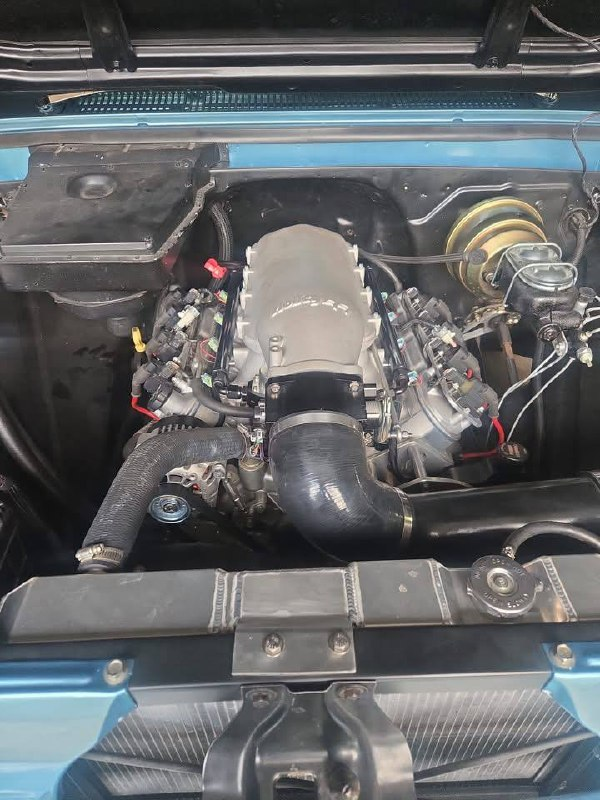
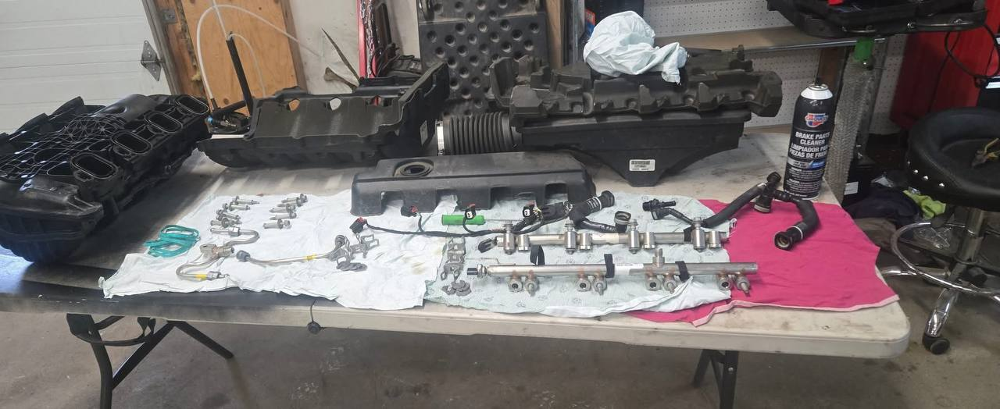
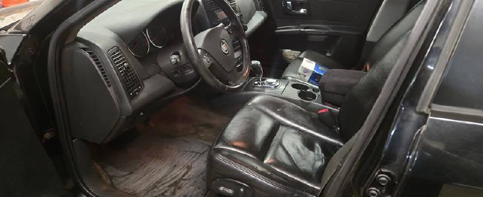
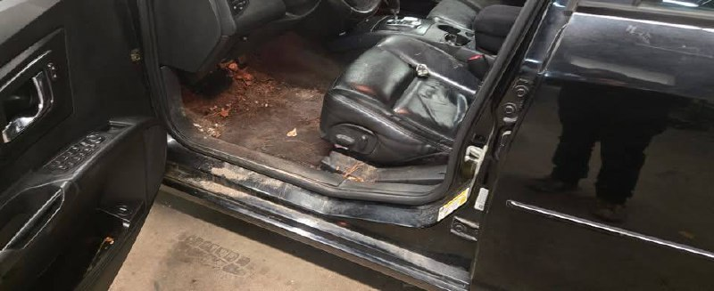
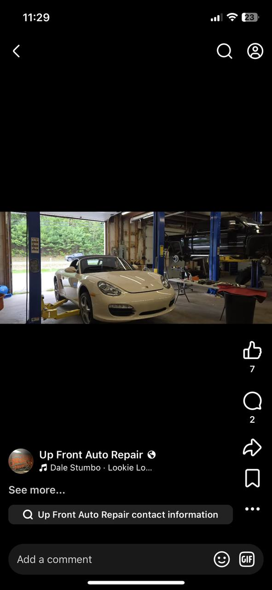
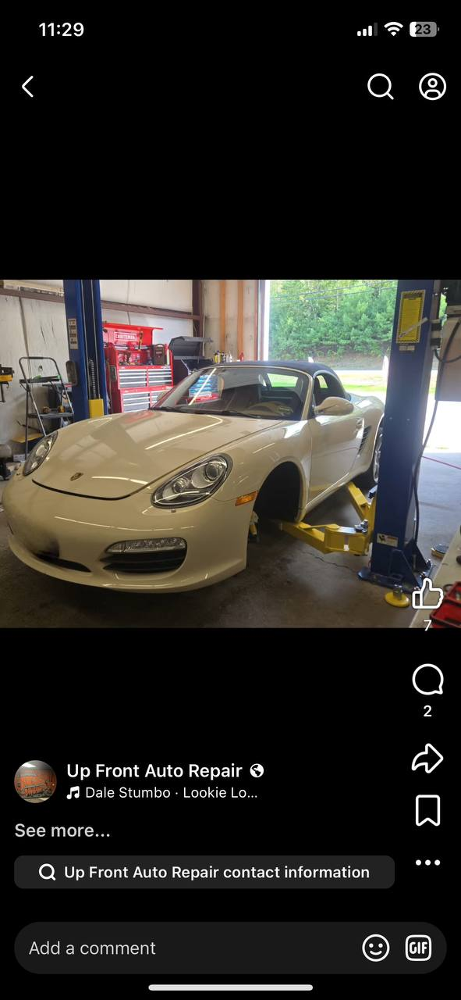
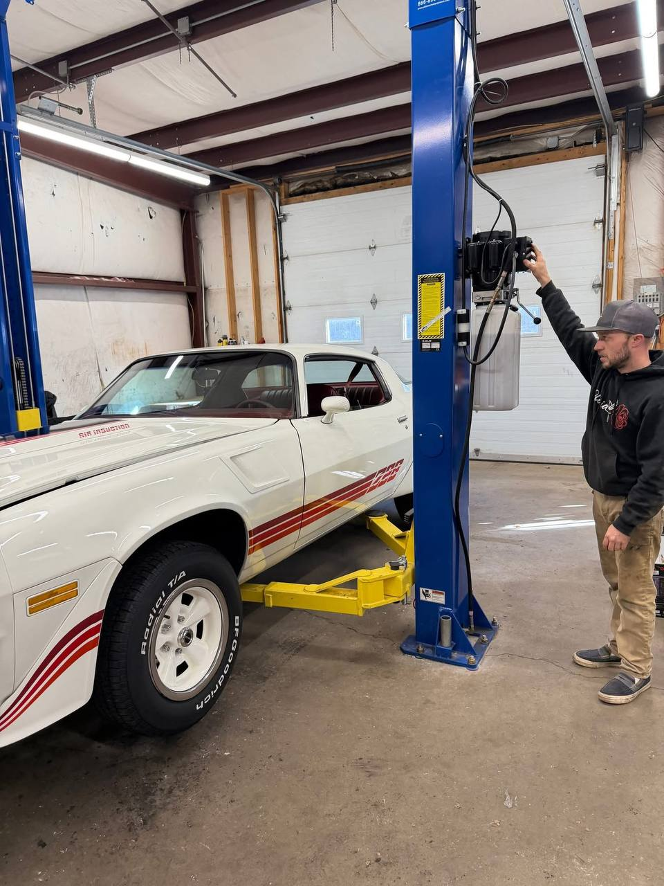
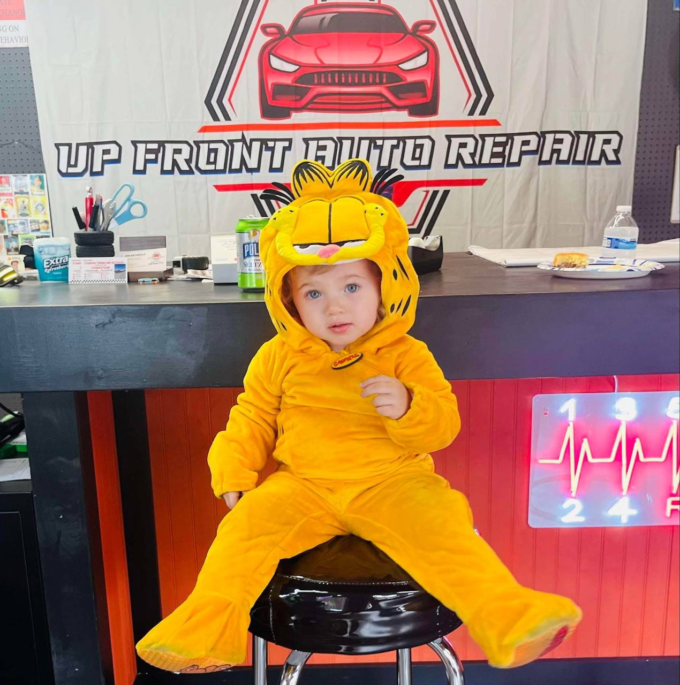

About Up Front Auto Repair
🐱 Say hi to Garfield — our shop mascot!
Up Front Auto Repair opened in Standish in August 2025, but our expertise runs deep — between Jon and his technician, we bring over 30 years of combined experience in the industry. We're a locally owned and operated shop right here on Ossipee Trail — part of the same Maine community we serve every day.
We built our reputation the old-fashioned way: by doing good work, charging fair prices, and treating every customer like a neighbor. Because in a small town, that's exactly what you are.
Whether it's a routine oil change or a complex repair, you'll always get a straight answer from us. No upselling, no surprises — just honest auto repair from people who care.